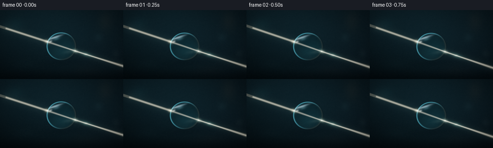
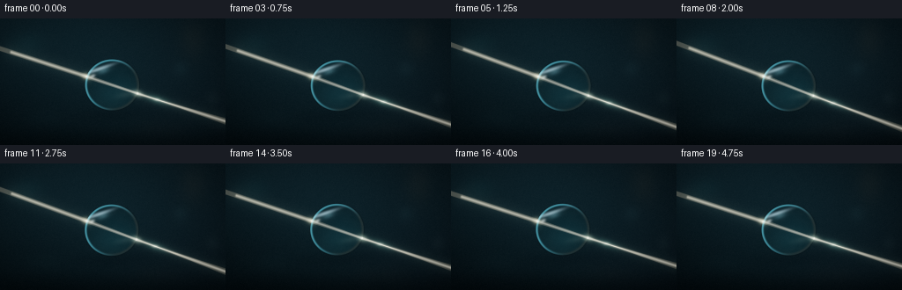
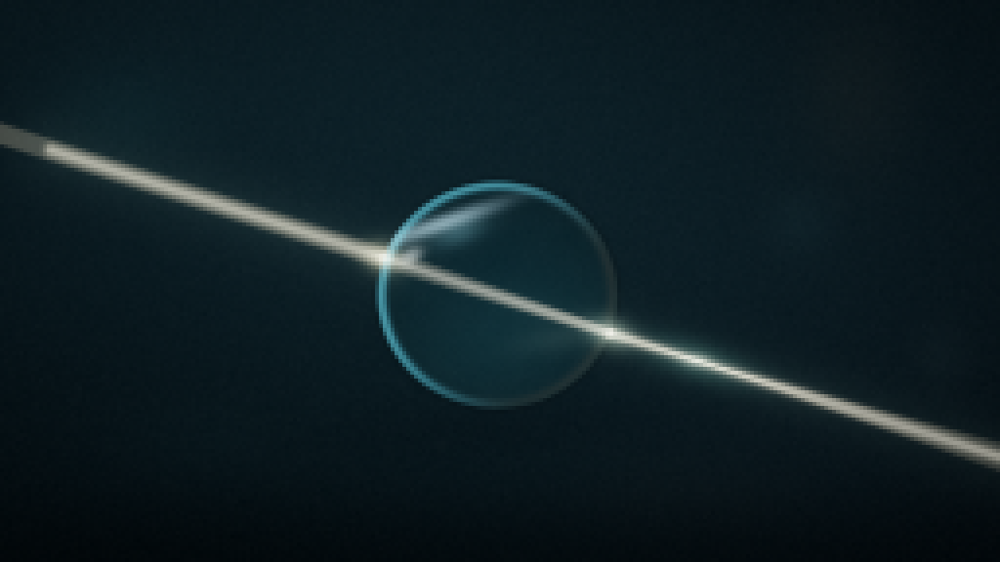
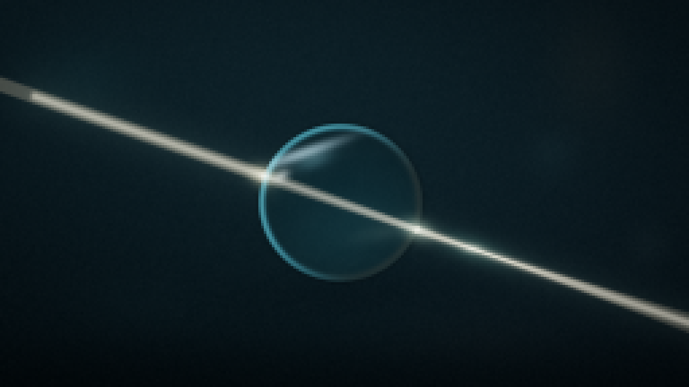
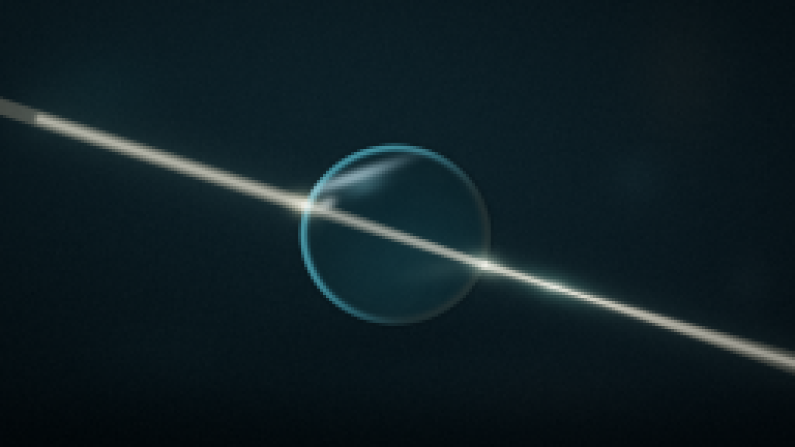
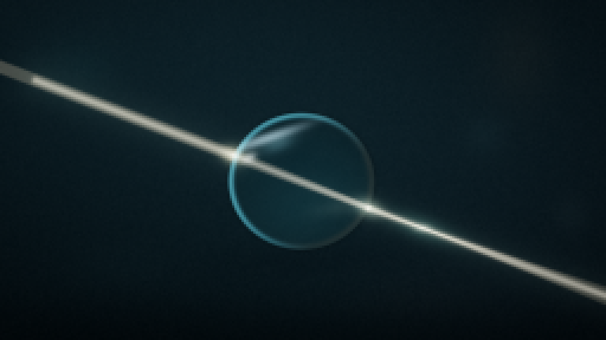
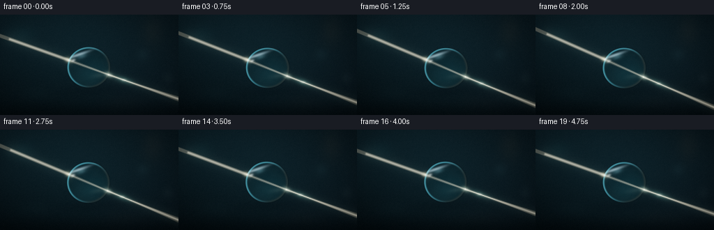

CODING AGENTS AS PIXEL WORLD MODELS
traex/DeepSeek-V4.1-Flash · phygen_088
点击播放 · 原生 RGB 像素
逐轮保存的候选
回放视频、检查图与代码变化。
每份候选均可单独播放。实际图片检查记录在下方工具轨迹中。
候选 01播放与检查图
点击播放 · 原生 RGB 像素

展开代码变化
--- 上一保存版本
+++ 本次保存版本
@@ -0,0 +1,438 @@
+#!/usr/bin/env python3
+"""Procedural light-through-water-droplet video for the PixelWorld contract."""
+
+from __future__ import annotations
+
+import json
+import math
+import subprocess
+from pathlib import Path
+
+import cv2
+import imageio_ffmpeg
+import numpy as np
+from PIL import Image
+from scipy.ndimage import gaussian_filter, map_coordinates
+
+import artifact_io
+
+
+CASE_DIR = Path(__file__).resolve().parent
+SPEC = json.loads((CASE_DIR / "task_spec.json").read_text())
+W, H = int(SPEC["width"]), int(SPEC["height"])
+N, FPS = int(SPEC["frames"]), float(SPEC["fps"])
+SS = 4
+HI_W, HI_H = W * SS, H * SS
+
+
+def smoothstep(edge0: float, edge1: float, x: np.ndarray) -> np.ndarray:
+ t = np.clip((x - edge0) / (edge1 - edge0), 0.0, 1.0)
+ return t * t * (3.0 - 2.0 * t)
+
+
+def normalize(v: np.ndarray) -> np.ndarray:
+ return v / max(float(np.linalg.norm(v)), 1e-9)
+
+
+def ellipse_normal(p: np.ndarray, center: np.ndarray, radii: np.ndarray) -> np.ndarray:
+ q = (p - center) / (radii * radii)
+ return normalize(q)
+
+
+def ellipse_intersections(
+ origin: np.ndarray, direction: np.ndarray, center: np.ndarray, radii: np.ndarray
+) -> np.ndarray:
+ q = (origin - center) / radii
+ dq = direction / radii
+ a = float(np.dot(dq, dq))
+ b = 2.0 * float(np.dot(q, dq))
+ c = float(np.dot(q, q) - 1.0)
+ disc = b * b - 4.0 * a * c
+ if disc < 0.0:
+ return np.empty(0, dtype=np.float64)
+ root = math.sqrt(max(disc, 0.0))
+ return np.array([(-b - root) / (2.0 * a), (-b + root) / (2.0 * a)])
+
+
+def refract(incident: np.ndarray, outward_normal: np.ndarray, eta: float) -> np.ndarray:
+ """Refract a unit ray; outward_normal is flipped to face the incident ray."""
+ i = normalize(incident)
+ n = normalize(outward_normal)
+ cos_i = -float(np.dot(i, n))
+ if cos_i < 0.0:
+ n = -n
+ cos_i = -cos_i
+ k = 1.0 - eta * eta * (1.0 - cos_i * cos_i)
+ if k < 0.0:
+ return normalize(i - 2.0 * np.dot(i, n) * n)
+ return normalize(eta * i + (eta * cos_i - math.sqrt(k)) * n)
+
+
+def trace_droplet_ray(
+ center: np.ndarray,
+ radii: np.ndarray,
+ angle: float,
+ offset: float,
+ index: float,
+) -> tuple[np.ndarray, np.ndarray, np.ndarray, np.ndarray, np.ndarray]:
+ direction = np.array([math.cos(angle), math.sin(angle)], dtype=np.float64)
+ perpendicular = np.array([-direction[1], direction[0]], dtype=np.float64)
+ origin = center - 104.0 * direction + offset * perpendicular
+ roots = ellipse_intersections(origin, direction, center, radii)
+ if len(roots) == 0:
+ raise RuntimeError("Central beam missed the droplet")
+
+ entry = origin + roots.min() * direction
+ inside = refract(direction, ellipse_normal(entry, center, radii), 1.0 / index)
+ roots = ellipse_intersections(entry, inside, center, radii)
+ exit_point = entry + roots.max() * inside
+ outgoing = refract(inside, ellipse_normal(exit_point, center, radii), index)
+ return origin, entry, exit_point, inside, outgoing
+
+
+def segment_distance(
+ x: np.ndarray, y: np.ndarray, p0: np.ndarray, p1: np.ndarray
+) -> np.ndarray:
+ vx, vy = float(p1[0] - p0[0]), float(p1[1] - p0[1])
+ wx, wy = x - float(p0[0]), y - float(p0[1])
+ denom = max(vx * vx + vy * vy, 1e-9)
+ t = np.clip((wx * vx + wy * vy) / denom, 0.0, 1.0)
+ dx = wx - t * vx
+ dy = wy - t * vy
+ return np.sqrt(dx * dx + dy * dy)
+
+
+def add_line(
+ target: np.ndarray,
+ x: np.ndarray,
+ y: np.ndarray,
+ p0: np.ndarray,
+ p1: np.ndarray,
+ sigma: float,
+ amplitude: float,
+ color: tuple[float, float, float],
+) -> None:
+ d = segment_distance(x, y, p0, p1)
+ amount = amplitude * np.exp(-0.5 * (d / sigma) ** 2)
+ for channel in range(3):
+ target[:, :, channel] += amount * color[channel]
+
+
+def add_radial(
+ target: np.ndarray,
+ x: np.ndarray,
+ y: np.ndarray,
+ center: tuple[float, float],
+ sigma_x: float,
+ sigma_y: float,
+ amplitude: float,
+ color: tuple[float, float, float],
+ angle: float = 0.0,
+) -> None:
+ dx, dy = x - center[0], y - center[1]
+ ca, sa = math.cos(angle), math.sin(angle)
+ u = ca * dx + sa * dy
+ v = -sa * dx + ca * dy
+ amount = amplitude * np.exp(-0.5 * ((u / sigma_x) ** 2 + (v / sigma_y) ** 2))
+ for channel in range(3):
+ target[:, :, channel] += amount * color[channel]
+
+
+def make_background(frame_index: int) -> np.ndarray:
+ yy, xx = np.mgrid[0:HI_H, 0:HI_W].astype(np.float32)
+ x = xx / SS
+ y = yy / SS
+ phase = frame_index / max(N - 1, 1)
+
+ top = np.array([0.018, 0.043, 0.055], dtype=np.float32)
+ bottom = np.array([0.006, 0.014, 0.019], dtype=np.float32)
+ blend = smoothstep(0.0, 1.0, y / H)[..., None]
+ image = top * (1.0 - blend) + bottom * blend
+
+ # A soft off-axis studio wash gives the water a definite silhouette.
+ d1 = ((x - 60.0) / 120.0) ** 2 + ((y - 38.0) / 92.0) ** 2
+ image += np.array([0.016, 0.045, 0.055], dtype=np.float32) * np.exp(-0.5 * d1)[..., None]
+ d2 = ((x - 224.0) / 72.0) ** 2 + ((y - 106.0) / 54.0) ** 2
+ image += np.array([0.012, 0.027, 0.035], dtype=np.float32) * np.exp(-0.5 * d2)[..., None]
+
+ # Distant, heavily defocused highlights supply detail for the droplet lens.
+ bokeh = [
+ (31.0 + 0.25 * math.sin(2 * math.pi * phase), 29.0, 13.0, 9.0, 0.034, (0.20, 0.72, 0.74)),
+ (219.0, 24.0 - 0.20 * math.cos(2 * math.pi * phase), 10.0, 15.0, 0.026, (0.78, 0.54, 0.30)),
+ (205.0, 57.0, 6.0, 6.0, 0.025, (0.44, 0.78, 0.83)),
+ (52.0, 113.0, 18.0, 7.0, 0.018, (0.20, 0.48, 0.52)),
+ (178.0, 126.0, 21.0, 8.0, 0.013, (0.55, 0.35, 0.21)),
+ (241.0, 91.0, 5.0, 5.0, 0.023, (0.62, 0.78, 0.77)),
+ ]
+ for cx, cy, sx, sy, amp, color in bokeh:
+ add_radial(image, x, y, (cx, cy), sx, sy, amp, color)
+
+ # Fine, stationary sensor texture avoids flat gradients without adding grain.
+ rng = np.random.default_rng(19)
+ noise = gaussian_filter(rng.normal(0.0, 1.0, (HI_H, HI_W)).astype(np.float32), 1.2)
+ noise /= max(float(np.std(noise)), 1e-6)
+ image += (0.0025 * noise)[..., None]
+
+ # Gentle vignette and a low, dark foreground band.
+ nx = (x - W * 0.5) / (W * 0.57)
+ ny = (y - H * 0.48) / (H * 0.65)
+ vignette = np.clip(1.0 - 0.28 * (nx * nx + ny * ny), 0.68, 1.0)
+ image *= vignette[..., None]
+ image *= (1.0 - 0.42 * smoothstep(0.82, 1.03, y / H))[..., None]
+ return image
+
+
+def render_droplet(
+ background: np.ndarray,
+ center: np.ndarray,
+ radii: np.ndarray,
+ phase: float,
+) -> tuple[np.ndarray, np.ndarray]:
+ yy, xx = np.mgrid[0:HI_H, 0:HI_W].astype(np.float32)
+ x = xx / SS
+ y = yy / SS
+ dx, dy = x - center[0], y - center[1]
+ u, v = dx / radii[0], dy / radii[1]
+ r2 = u * u + v * v
+ r = np.sqrt(np.maximum(r2, 0.0))
+
+ # A spherical droplet compresses the scene toward its center. Keeping the
+ # transform fixed at the rim avoids a visible seam.
+ core = np.clip(1.0 - r2, 0.0, 1.0)
+ magnification = 1.0 - 0.46 * core ** 1.45
+ swirl = 0.75 * core * math.sin(2.0 * math.pi * phase)
+ sx0 = center[0] + dx * magnification + swirl * v
+ sy0 = center[1] + dy * magnification - swirl * u
+
+ # Tiny per-channel focus offsets create a natural water/glass fringe.
+ samples = []
+ for channel, shift in enumerate((-0.012, 0.0, 0.012)):
+ sx = center[0] + (sx0 - center[0]) * (1.0 + shift)
+ sy = center[1] + (sy0 - center[1]) * (1.0 + shift)
+ samples.append(
+ map_coordinates(
+ background[:, :, channel],
+ [sy, sx],
+ order=1,
+ mode="reflect",
+ prefilter=False,
+ )
+ )
+ lensed = np.stack(samples, axis=-1)
+
+ water_tint = np.array([0.020, 0.085, 0.102], dtype=np.float32)
+ lensed = lensed * 0.78 + water_tint * (0.23 + 0.08 * (1.0 - core))[..., None]
+ lensed += np.array([0.004, 0.024, 0.031], dtype=np.float32) * core[..., None]
+
+ # Internal scattered light and a weak secondary caustic.
+ add_radial(
+ lensed, x, y, (center[0] + 5.0, center[1] + 9.0),
+ 15.0, 8.0, 0.040, (0.20, 0.62, 0.66), angle=-0.35,
+ )
+ add_radial(
+ lensed, x, y, (center[0] + 16.0, center[1] + 11.0),
+ 8.0, 2.4, 0.055, (0.72, 0.86, 0.76), angle=-0.18,
+ )
+
+ # The window-like reflection is deliberately restrained so the light beam
+ # remains the brightest and most legible event.
+ add_radial(
+ lensed, x, y, (center[0] - 15.0, center[1] - 18.0),
+ 10.5, 1.35, 0.70, (0.72, 0.91, 1.0), angle=-0.33,
+ )
+ add_radial(
+ lensed, x, y, (center[0] - 10.0, center[1] - 16.0),
+ 4.8, 2.2, 0.24, (0.50, 0.83, 0.92), angle=-0.35,
+ )
+ add_radial(
+ lensed, x, y, (center[0] - 22.0, center[1] - 10.0),
+ 2.0, 1.25, 0.55, (0.95, 1.0, 1.0), angle=-0.5,
+ )
+
+ # Reflective rim: cool on the lit side, very subtle warm bounce at lower right.
+ rim = np.exp(-0.5 * ((r - 0.958) / 0.026) ** 2)
+ light_side = smoothstep(-0.8, 0.9, -u - 0.55 * v)
+ lensed += (
+ rim * light_side
+ )[..., None] * np.array([0.20, 0.56, 0.66], dtype=np.float32)
+ bounce = np.exp(-0.5 * ((r - 0.955) / 0.035) ** 2) * smoothstep(-0.5, 1.0, u + 0.4 * v)
+ lensed += (0.09 * bounce)[..., None] * np.array([0.66, 0.42, 0.24], dtype=np.float32)
+
+ inside = 1.0 - smoothstep(0.985, 1.006, r)
+ edge_dark = np.exp(-0.5 * ((r - 1.005) / 0.018) ** 2)
+ image = background * (1.0 - 0.22 * edge_dark[..., None])
+ image = image * (1.0 - inside[..., None]) + lensed * inside[..., None]
+
+ # Soft contact shadow and atmospheric halo keep the drop in the scene.
+ add_radial(
+ image, x, y, (center[0] + 3.0, center[1] + 33.0),
+ 30.0, 5.0, -0.16, (0.02, 0.05, 0.055), angle=-0.05,
+ )
+ add_radial(
+ image, x, y, center,
+ radii[0] * 1.40, radii[1] * 1.38, 0.018, (0.16, 0.52, 0.58),
+ )
+ return image, inside
+
+
+def add_optical_paths(
+ image: np.ndarray,
+ center: np.ndarray,
+ radii: np.ndarray,
+ angle: float,
+ phase: float,
+) -> tuple[np.ndarray, np.ndarray, np.ndarray]:
+ yy, xx = np.mgrid[0:H, 0:W].astype(np.float32)
+ x, y = xx + 0.5, yy + 0.5
+ beam = np.zeros_like(image)
+
+ offsets = np.linspace(-2.35, 2.35, 11)
+ main_color = (1.0, 0.91, 0.73)
+ paths = []
+ for offset in offsets:
+ path = trace_droplet_ray(center, radii, angle, float(offset), 1.333)
+ paths.append(path)
+ origin, entry, exit_point, inside, outgoing = path
+ start = origin - 45.0 * normalize(entry - origin)
+ add_line(beam, x, y, start, entry, 0.43, 0.085, main_color)
+ add_line(beam, x, y, entry, exit_point, 0.34, 0.080, main_color)
+ add_line(beam, x, y, exit_point, exit_point + 116.0 * outgoing, 0.40, 0.074, main_color)
+
+ # A crisp center core plus a broad atmospheric halo.
+ center_path = trace_droplet_ray(center, radii, angle, 0.0, 1.333)
+ _, entry, exit_point, _, outgoing = center_path
+ direction = np.array([math.cos(angle), math.sin(angle)])
+ start = center - 120.0 * direction
+ add_line(beam, x, y, start, entry, 1.05, 0.60, (1.0, 0.94, 0.80))
+ add_line(beam, x, y, entry, exit_point, 0.80, 0.40, (1.0, 0.95, 0.83))
+ add_line(beam, x, y, exit_point, exit_point + 120.0 * outgoing, 1.05, 0.46, (1.0, 0.94, 0.80))
+ add_line(beam, x, y, start, entry, 7.0, 0.040, (0.56, 0.75, 0.70))
+ add_line(beam, x, y, exit_point, exit_point + 120.0 * outgoing, 6.0, 0.035, (0.52, 0.72, 0.66))
+
+ # Dispersion is slightly exaggerated to remain visible at 256x144.
+ dispersion = [
+ (1.326, (0.30, 0.76, 1.0), 0.050),
+ (1.337, (1.0, 0.36, 0.22), 0.036),
+ ]
+ for index, (eta, color, strength) in enumerate(dispersion):
+ _, entry_c, exit_c, inside_c, outgoing_c = trace_droplet_ray(
+ center, radii, angle, 0.0, eta
+ )
+ add_line(beam, x, y, entry_c, exit_c, 0.95, strength, color)
+ add_line(beam, x, y, exit_c, exit_c + 120.0 * outgoing_c, 0.90, strength, color)
+
+ # Entry/exit interface glints and the projected caustic.
+ entry_glow = 0.50 + 0.05 * math.sin(2.0 * math.pi * phase)
+ add_radial(beam, x, y, tuple(entry), 3.2, 2.2, entry_glow, (1.0, 0.90, 0.66), angle=angle)
+ add_radial(beam, x, y, tuple(exit_point), 3.7, 2.2, 0.42, (0.82, 0.93, 0.80), angle=angle)
+ caustic = exit_point + outgoing * (23.0 + 1.6 * math.sin(2.0 * math.pi * phase))
+ add_radial(
+ beam, x, y, tuple(caustic), 10.0, 3.0,
+ 0.13 + 0.018 * math.sin(2.0 * math.pi * phase + 0.7),
+ (0.38, 0.83, 0.76), angle=math.atan2(outgoing[1], outgoing[0]),
+ )
+ add_radial(beam, x, y, tuple(caustic), 2.3, 1.15, 0.30, (0.93, 1.0, 0.88))
+
+ image += beam
+ return image, entry, exit_point
+
+
+def finish_frame(image: np.ndarray, frame_index: int) -> np.ndarray:
+ # A restrained bloom is applied only to the brightest optical energy.
+ luminance = image.mean(axis=2)
+ bloom_source = np.maximum(luminance - 0.48, 0.0) ** 1.45
+ bloom = gaussian_filter(bloom_source, 2.8)
+ image += bloom[..., None] * np.array([0.40, 0.55, 0.46], dtype=np.float32)
+
+ # Filmic shoulder preserves a white beam core instead of clipping abruptly.
+ image = np.maximum(image, 0.0)
+ image = 1.0 - np.exp(-image * 1.28)
+ image = image ** 0.92
+
+ # A very slight cool-shadow / warm-highlight grade.
+ shadows = np.clip(1.0 - image.mean(axis=2, keepdims=True) * 2.2, 0.0, 1.0)
+ image += shadows * np.array([-0.004, 0.003, 0.007], dtype=np.float32)
+
+ rng = np.random.default_rng(310 + frame_index)
+ dither = rng.normal(0.0, 0.0023, (H, W, 1)).astype(np.float32)
+ return np.clip((image + dither) * 255.0 + 0.5, 0, 255).astype(np.uint8)
+
+
+def generate_frames() -> np.ndarray:
+ frames = []
+ for frame_index in range(N):
+ phase = frame_index / max(N - 1, 1)
+ tau = 2.0 * math.pi * phase
+
+ center = np.array(
+ [
+ 127.0 + 0.55 * math.sin(tau + 0.35),
+ 75.8 + 0.85 * math.sin(tau - 0.45),
+ ],
+ dtype=np.float64,
+ )
+ radii = np.array(
+ [
+ 30.9 * (1.0 + 0.010 * math.sin(tau + 0.2)),
+ 29.3 * (1.0 - 0.008 * math.sin(tau + 0.2)),
+ ],
+ dtype=np.float64,
+ )
+ beam_angle = math.radians(19.3 + 1.55 * math.sin(tau - 1.05))
+
+ background = make_background(frame_index)
+ high_res, _ = render_droplet(background, center, radii, phase)
+ image = cv2.resize(high_res, (W, H), interpolation=cv2.INTER_AREA)
+ image, entry, exit_point = add_optical_paths(
+ image.astype(np.float32), center, radii, beam_angle, phase
+ )
+ frames.append(finish_frame(image, frame_index))
+ print(f"rendered {frame_index + 1:02d}/{N}", flush=True)
+ return np.stack(frames)
+
+
+def encode_mp4(frames: np.ndarray) -> None:
+ ffmpeg = imageio_ffmpeg.get_ffmpeg_exe()
+ command = [
+ ffmpeg,
+ "-y",
+ "-loglevel",
+ "error",
+ "-f",
+ "rawvideo",
+ "-pix_fmt",
+ "rgb24",
+ "-s",
+ f"{W}x{H}",
+ "-r",
+ str(FPS),
+ "-i",
+ "-",
+ "-an",
+ "-c:v",
+ "libx264",
+ "-pix_fmt",
+ "yuv420p",
+ "-crf",
+ "15",
+ "-movflags",
+ "+faststart",
+ str(CASE_DIR / "video.mp4"),
+ ]
+ process = subprocess.Popen(command, stdin=subprocess.PIPE)
+ assert process.stdin is not None
+ process.stdin.write(frames.astype(np.uint8).tobytes())
+ process.stdin.close()
+ if process.wait() != 0:
+ raise RuntimeError("ffmpeg failed to encode video.mp4")
+
+
+def main() -> None:
+ frames = generate_frames()
+ artifact_io.save(frames, CASE_DIR)
+ encode_mp4(frames)
+ print("saved frames, pixels.npz, index.html, and video.mp4")
+
+
+if __name__ == "__main__":
+ main()
候选 02播放与检查图
点击播放 · 原生 RGB 像素


展开代码变化
--- 上一保存版本
+++ 本次保存版本
@@ -286,7 +286,7 @@
x, y = xx + 0.5, yy + 0.5
beam = np.zeros_like(image)
- offsets = np.linspace(-2.35, 2.35, 11)
+ offsets = np.linspace(-2.35, 2.35, 15)
main_color = (1.0, 0.91, 0.73)
paths = []
for offset in offsets:
@@ -294,9 +294,9 @@
paths.append(path)
origin, entry, exit_point, inside, outgoing = path
start = origin - 45.0 * normalize(entry - origin)
- add_line(beam, x, y, start, entry, 0.43, 0.085, main_color)
- add_line(beam, x, y, entry, exit_point, 0.34, 0.080, main_color)
- add_line(beam, x, y, exit_point, exit_point + 116.0 * outgoing, 0.40, 0.074, main_color)
+ add_line(beam, x, y, start, entry, 0.39, 0.068, main_color)
+ add_line(beam, x, y, entry, exit_point, 0.29, 0.054, main_color)
+ add_line(beam, x, y, exit_point, exit_point + 116.0 * outgoing, 0.34, 0.062, main_color)
# A crisp center core plus a broad atmospheric halo.
center_path = trace_droplet_ray(center, radii, angle, 0.0, 1.333)
@@ -304,22 +304,29 @@
direction = np.array([math.cos(angle), math.sin(angle)])
start = center - 120.0 * direction
add_line(beam, x, y, start, entry, 1.05, 0.60, (1.0, 0.94, 0.80))
- add_line(beam, x, y, entry, exit_point, 0.80, 0.40, (1.0, 0.95, 0.83))
- add_line(beam, x, y, exit_point, exit_point + 120.0 * outgoing, 1.05, 0.46, (1.0, 0.94, 0.80))
+ add_line(beam, x, y, entry, exit_point, 0.67, 0.29, (1.0, 0.95, 0.83))
+ add_line(beam, x, y, exit_point, exit_point + 120.0 * outgoing, 1.00, 0.43, (1.0, 0.94, 0.80))
add_line(beam, x, y, start, entry, 7.0, 0.040, (0.56, 0.75, 0.70))
add_line(beam, x, y, exit_point, exit_point + 120.0 * outgoing, 6.0, 0.035, (0.52, 0.72, 0.66))
- # Dispersion is slightly exaggerated to remain visible at 256x144.
- dispersion = [
- (1.326, (0.30, 0.76, 1.0), 0.050),
- (1.337, (1.0, 0.36, 0.22), 0.036),
+ # A compact spectral fan at the exit edge makes the refraction direction
+ # readable without overpowering the white beam.
+ spectral = [
+ (1.326, (0.24, 0.70, 1.0)),
+ (1.330, (0.42, 0.92, 0.72)),
+ (1.334, (0.94, 0.92, 0.44)),
+ (1.338, (1.0, 0.42, 0.25)),
]
- for index, (eta, color, strength) in enumerate(dispersion):
+ for band, (eta, color) in enumerate(spectral):
_, entry_c, exit_c, inside_c, outgoing_c = trace_droplet_ray(
center, radii, angle, 0.0, eta
)
- add_line(beam, x, y, entry_c, exit_c, 0.95, strength, color)
- add_line(beam, x, y, exit_c, exit_c + 120.0 * outgoing_c, 0.90, strength, color)
+ add_line(beam, x, y, entry_c, exit_c, 0.55, 0.022, color)
+ add_line(beam, x, y, exit_c, exit_c + 37.0 * outgoing_c, 0.60, 0.032, color)
+ add_radial(
+ beam, x, y, tuple(exit_c), 3.0, 1.25, 0.030,
+ color, angle=math.atan2(outgoing_c[1], outgoing_c[0]),
+ )
# Entry/exit interface glints and the projected caustic.
entry_glow = 0.50 + 0.05 * math.sin(2.0 * math.pi * phase)
@@ -378,7 +385,7 @@
],
dtype=np.float64,
)
- beam_angle = math.radians(19.3 + 1.55 * math.sin(tau - 1.05))
+ beam_angle = math.radians(21.5 + 2.25 * math.sin(tau - 1.05))
background = make_background(frame_index)
high_res, _ = render_droplet(background, center, radii, phase)
候选 03播放与检查图

可观测工具轨迹
实际执行的命令与返回图片。
命令 1exit 0
/bin/bash -c "pwd && printf '\\nFILES\\n' && rg --files -g 'prompt.txt' -g 'GENERATION_RULES.md' -g 'task_spec.json' -g '"'!node_modules'"' -g '"'!vendor'"'"
命令 2exit 0
/bin/bash -c "printf '%s\\n' '--- prompt.txt ---'; sed -n '1,240p' prompt.txt; printf '%s\\n' '--- GENERATION_RULES.md ---'; sed -n '1,320p' GENERATION_RULES.md; printf '%s\\n' '--- task_spec.json ---'; sed -n '1,320p' task_spec.json"
命令 3exit 0
/bin/bash -c "printf '%s\\n' '--- root ---'; ls -la; printf '%s\\n' '--- tooling ---'; command -v ffmpeg || true; command -v blender || true; command -v python3 || true; command -v node || true; command -v convert || true; command -v magick || true; command -v chromium || true; command -v google-chrome || true; command -v playwright || true"
命令 4exit 0
/bin/bash -c "sed -n '1,260p' artifact_io.py"
命令 5exit 0
/bin/bash -c "sed -n '1,260p' player_template.html"
命令 6exit 0
/bin/bash -c "python3 - <<'PY' mods=['numpy','PIL','scipy','cv2','imageio','matplotlib'] for m in mods: try: x=__import__(m); print(m, getattr(x,'__version__','ok')) except Exception as e: print(m, 'MISSING', e) PY"
命令 7exit 0
/bin/bash -c "python3 - <<'PY'
import numpy as np
C=np.array([129.,76.5]); rx=31.; ry=29.5
# ray y=63+0.06(x+10)
# solve scaled circle
d=np.array([1.,0.06]); d/=np.linalg.norm(d)
o=np.array([-10.,63.])
# scaled coords u=(p-C)/r
ou=(o-C)/np.array([rx,ry]); du=d/np.array([rx,ry]);
a=du@du;b=2*ou@du;c=ou@ou-1
t=(-b-np.sqrt(b*b-4*a*c))/(2*a)
p=o+t*d
print('entry',p,'dir',d)
n=(p-C)/np.array([rx,ry]); n/=np.linalg.norm(n)
# inward normal is -n (n outward)
ni=-n
cosi=-(d@n)
eta=1/1.333
k=1-eta*eta*(1-cosi*cosi)
dt=eta*d+(eta*cosi-np.sqrt(k))*n
print('normal',n,'cosi',cosi,'internal',dt)
# find exit
ou=(p-C)/np.array([rx,ry]); du=dt/np.array([rx,ry]);a=du@du;b=2*ou@du;c=ou@ou-1
ts=np.roots([a,b,c]);print(ts)
t=ts.max(); q=p+t*dt
print('exit',q,'travel',t)
n2=(q-C)/np.array([rx,ry]); n2/=np.linalg.norm(n2)
cosi2=dt@n2; eta2=1.333;k=1-eta2*eta2*(1-cosi2*cosi2);dout=eta2*dt+(eta2*cosi2-np.sqrt(k))*n2
print('out',dout)
PY"命令 8exit 0
/bin/bash -c "python3 - <<'PY'
import numpy as np
C=np.array([129.,76.5]); R=np.array([31.,29.5])
d=np.array([1.,0.06]); d/=np.linalg.norm(d);o=np.array([-10.,63.])
def intersect(o,d):
ou=(o-C)/R;du=d/R;a=du@du;b=2*ou@du;c=ou@ou-1
return np.roots([a,b,c])
ts=intersect(o,d);t=ts.min();p=o+t*d
n=np.array([(p[0]-C[0])/R[0]**2,(p[1]-C[1])/R[1]**2]);n/=np.linalg.norm(n)
cosi=-(d@n);eta=1/1.333;k=1-eta*eta*(1-cosi*cosi);dt=eta*d+(eta*cosi-np.sqrt(k))*n;dt/=np.linalg.norm(dt)
print('entry',p,'normal',n,'internal',dt)
ts=intersect(p,dt);print('ts',ts);t=ts.max();q=p+t*dt
n=np.array([(q[0]-C[0])/R[0]**2,(q[1]-C[1])/R[1]**2]);n/=np.linalg.norm(n)
cosi=dt@n;eta=1.333;k=1-eta*eta*(1-cosi*cosi);dout=eta*dt+(eta*cosi-np.sqrt(k))*n;dout/=np.linalg.norm(dout)
print('exit',q,'normal',n,'out',dout)
PY"命令 9exit 0
/bin/bash -c "python3 - <<'PY' import numpy as np C=np.array([129.,76.5]); R=np.array([31.,29.5]) d=np.array([1.,0.06]); d/=np.linalg.norm(d);o=np.array([-10.,63.]) def nrm(p): n=np.array([(p[0]-C[0])/R[0]**2,(p[1]-C[1])/R[1]**2]);return n/np.linalg.norm(n) def roots(o,d): ou=(o-C)/R;du=d/R;a=du@du;b=2*ou@du;c=ou@ou-1 return np.roots([a,b,c]) p=o+roots(o,d).min()*d;n=nrm(p);eta=1/1.333;ci=-(d@n);dt=eta*d+(eta*ci-np.sqrt(1-eta**2*(1-ci**2)))*n;dt/=np.linalg.norm(dt) q=p+roots(p,dt).max()*dt;n=nrm(q);ci=dt@n;do=1.333*dt+(1.333*ci-np.sqrt(1-1.333**2*(1-ci**2)))*n;do/=np.linalg.norm(do) for off in [-1.5,-1,-.5,0,.5,1,1.5]: # beam parallel shifted perpendicular-ish in y, and crossing center at frame progress d=np.array([1.,0.06]);d/=np.linalg.norm(d);o=np.array([-10.,63+off]);ts=roots(o,d);p=o+ts.min()*d;n=nrm(p);eta=1/1.333;ci=-(d@n);dt=eta*d+(eta*ci-np.sqrt(1-eta**2*(1-ci**2)))*n;dt/=np.linalg.norm(dt);q=p+roots(p,dt).max()*dt;n=nrm(q);ci=dt@n;do=1.333*dt+(1.333*ci-np.sqrt(1-1.333**2*(1-ci**2)))*n;do/=np.linalg.norm(do);print(off,p,q,do) PY"
命令 10exit 0
/bin/bash -c "python3 - <<'PY' import numpy as np C=np.array([129.,76.5]); R=np.array([31.,29.5]) def nrm(p): n=np.array([(p[0]-C[0])/R[0]**2,(p[1]-C[1])/R[1]**2]);return n/np.linalg.norm(n) def roots(o,d): ou=(o-C)/R;du=d/R;a=du@du;b=2*ou@du;c=ou@ou-1 return np.roots([a,b,c]) for off in [-4,-3,-2,-1,0,1,2,3,4]: d=np.array([1.,0.18]);d/=np.linalg.norm(d);o=np.array([-10.,52+off]);ts=roots(o,d);p=o+ts.min()*d;n=nrm(p);eta=1/1.333;ci=-(d@n);dt=eta*d+(eta*ci-np.sqrt(1-eta**2*(1-ci**2)))*n;dt/=np.linalg.norm(dt);q=p+roots(p,dt).max()*dt;n=nrm(q);ci=dt@n;do=1.333*dt+(1.333*ci-np.sqrt(1-1.333**2*(1-ci**2)))*n;do/=np.linalg.norm(do);print(off, 'in',np.round(p,2),'out',np.round(q,2),'dir',np.round(do,3)) PY"
命令 11exit 0
/bin/bash -c "python3 - <<'PY'
import numpy as np
C=np.array([129.,76.5]); R=np.array([31.,29.5])
def nrm(p):
n=np.array([(p[0]-C[0])/R[0]**2,(p[1]-C[1])/R[1]**2]);return n/np.linalg.norm(n)
def roots(o,d):
ou=(o-C)/R;du=d/R;a=du@du;b=2*ou@du;c=ou@ou-1
return np.roots([a,b,c])
for slope in [0,.06,.12,.18,.24,.30]:
print('slope',slope)
for off in [-1,0,1]:
d=np.array([1.,slope]);d/=np.linalg.norm(d);o=np.array([-10.,55+off]);ts=roots(o,d);p=o+ts.min()*d;n=nrm(p);eta=1/1.333;ci=-(d@n);dt=eta*d+(eta*ci-np.sqrt(1-eta**2*(1-ci**2)))*n;dt/=np.linalg.norm(dt);q=p+roots(p,dt).max()*dt;n=nrm(q);ci=dt@n;do=1.333*dt+(1.333*ci-np.sqrt(1-1.333**2*(1-ci**2)))*n;do/=np.linalg.norm(do);print(off,np.round(p,1),np.round(q,1),np.round(do,3))
PY"命令 12exit 0
/bin/bash -c "python3 - <<'PY' import numpy as np C=np.array([129.,76.5]); R=np.array([31.,29.5]) def nrm(p): n=np.array([(p[0]-C[0])/R[0]**2,(p[1]-C[1])/R[1]**2]);return n/np.linalg.norm(n) def roots(o,d): ou=(o-C)/R;du=d/R;a=du@du;b=2*ou@du;c=ou@ou-1 return np.roots([a,b,c]) for x in [90,92,94,96,98]: for y in [80,84,88,92]: d=np.array([1.,.18]);d/=np.linalg.norm(d);o=np.array([x-30.,y-30*.18]);ts=roots(o,d) if not len(ts):continue p=o+ts.min()*d;n=nrm(p);eta=1/1.333;ci=-(d@n);dt=eta*d+(eta*ci-np.sqrt(1-eta**2*(1-ci**2)))*n;dt/=np.linalg.norm(dt);q=p+roots(p,dt).max()*dt;n=nrm(q);ci=dt@n;do=1.333*dt+(1.333*ci-np.sqrt(1-1.333**2*(1-ci**2)))*n;do/=np.linalg.norm(do);print(x,y,'entry',np.round(p,1),'exit',np.round(q,1),'out',np.round(do,3)) PY"
命令 13exit 0
/bin/bash -c "python3 - <<'PY' import numpy as np C=np.array([129.,76.5]); R=np.array([31.,29.5]) def nrm(p): n=np.array([(p[0]-C[0])/R[0]**2,(p[1]-C[1])/R[1]**2]);return n/np.linalg.norm(n) def roots(o,d): ou=(o-C)/R;du=d/R;a=du@du;b=2*ou@du;c=ou@ou-1 return np.roots([a,b,c]) for ang in [5,10,15,20,25,30,35,40]: a=np.radians(ang);d=np.array([np.cos(a),np.sin(a)]);o=C-45*d;ts=roots(o,d) if not len(ts):continue p=o+ts.min()*d;n=nrm(p);eta=1/1.333;ci=-(d@n);dt=eta*d+(eta*ci-np.sqrt(1-eta**2*(1-ci**2)))*n;dt/=np.linalg.norm(dt);q=p+roots(p,dt).max()*dt;n=nrm(q);ci=dt@n;do=1.333*dt+(1.333*ci-np.sqrt(1-1.333**2*(1-ci**2)))*n;do/=np.linalg.norm(do);print(ang,'in',np.round(p,1),'out',np.round(q,1),'dir',np.round(do,3),'delta',np.degrees(np.arctan2(do[1],do[0])-a)) PY"
命令 14exit 0
/bin/bash -c "python3 - <<'PY' import numpy as np C=np.array([129.,76.5]); R=np.array([31.,29.5]) def nrm(p): n=np.array([(p[0]-C[0])/R[0]**2,(p[1]-C[1])/R[1]**2]);return n/np.linalg.norm(n) def roots(o,d): ou=(o-C)/R;du=d/R;a=du@du;b=2*ou@du;c=ou@ou-1 return np.roots([a,b,c]) for off in [-5,-4,-3,-2,-1,0,1,2,3,4,5]: a=np.radians(18);d=np.array([np.cos(a),np.sin(a)]);perp=np.array([-d[1],d[0]]);o=C-45*d+off*perp;ts=roots(o,d) if not len(ts):continue p=o+ts.min()*d;n=nrm(p);eta=1/1.333;ci=-(d@n);dt=eta*d+(eta*ci-np.sqrt(1-eta**2*(1-ci**2)))*n;dt/=np.linalg.norm(dt);q=p+roots(p,dt).max()*dt;n=nrm(q);ci=dt@n;do=1.333*dt+(1.333*ci-np.sqrt(1-1.333**2*(1-ci**2)))*n;do/=np.linalg.norm(do);print(off,'in',np.round(p,1),'out',np.round(q,1),'dir',np.round(do,3)) PY"
命令 15exit 0
/bin/bash -c "python3 - <<'PY' import numpy as np C=np.array([128.,76.5]); R=np.array([30.,29.]) def nrm(p): n=np.array([(p[0]-C[0])/R[0]**2,(p[1]-C[1])/R[1]**2]);return n/np.linalg.norm(n) def roots(o,d): ou=(o-C)/R;du=d/R;a=du@du;b=2*ou@du;c=ou@ou-1 return np.roots([a,b,c]) for ang in [15,18,20,22,25,28]: a=np.radians(ang);d=np.array([np.cos(a),np.sin(a)]);o=C-42*d;ts=roots(o,d);p=o+ts.min()*d;n=nrm(p);eta=1/1.333;ci=-(d@n);dt=eta*d+(eta*ci-np.sqrt(1-eta**2*(1-ci**2)))*n;dt/=np.linalg.norm(dt);q=p+roots(p,dt).max()*dt;n=nrm(q);ci=dt@n;do=1.333*dt+(1.333*ci-np.sqrt(1-1.333**2*(1-ci**2)))*n;do/=np.linalg.norm(do);print(ang,'in',np.round(p,1),'out',np.round(q,1),'dir',np.round(do,3)) PY"
命令 16exit 0
/bin/bash -c "python3 - <<'PY' import numpy as np C=np.array([128.,76.5]); R=np.array([30.,29.]) def nrm(p): n=np.array([(p[0]-C[0])/R[0]**2,(p[1]-C[1])/R[1]**2]);return n/np.linalg.norm(n) def roots(o,d): ou=(o-C)/R;du=d/R;a=du@du;b=2*ou@du;c=ou@ou-1 return np.roots([a,b,c]) for ang in [15,18,20,22,25,28]: a=np.radians(ang);d=np.array([np.cos(a),np.sin(a)]);perp=np.array([-d[1],d[0]]);o=C-42*d+8*perp;ts=roots(o,d);p=o+ts.min()*d;n=nrm(p);eta=1/1.333;ci=-(d@n);dt=eta*d+(eta*ci-np.sqrt(1-eta**2*(1-ci**2)))*n;dt/=np.linalg.norm(dt);q=p+roots(p,dt).max()*dt;n=nrm(q);ci=dt@n;do=1.333*dt+(1.333*ci-np.sqrt(1-1.333**2*(1-ci**2)))*n;do/=np.linalg.norm(do);print(ang,'in',np.round(p,1),'out',np.round(q,1),'dir',np.round(do,3)) PY"
命令 17exit 0
/bin/bash -c "python3 - <<'PY' import importlib.util for m in ['imageio_ffmpeg','av','moviepy']: print(m, bool(importlib.util.find_spec(m))) PY"
命令 18exit 0
/bin/bash -c "python3 - <<'PY' import imageio_ffmpeg print(imageio_ffmpeg.get_ffmpeg_exe()) PY"
命令 19exit 1
/bin/bash -c 'python3 generate.py'
命令 20exit 1
/bin/bash -c 'python3 generate.py'
命令 21exit 1
/bin/bash -c 'python3 generate.py'
命令 22exit 0
/bin/bash -c 'python3 generate.py'
命令 23exit 0
/bin/bash -c "python3 - <<'PY'
from PIL import Image
from pathlib import Path
for i in [0,7,13,19]:
im=Image.open(f'frames/{i:02d}.png')
im.resize((1024,576),Image.Resampling.NEAREST).save(f'.tmp/frame_{i:02d}_4x.png')
PY
python3 - <<'PY'
import cv2, numpy as np
cap=cv2.VideoCapture('video.mp4')
frames=[]
while True:
ok,f=cap.read()
if not ok: break
frames.append(f)
print('video frames',len(frames),'size',frames[0].shape if frames else None)
for i in [0,9,19]:
cv2.imwrite(f'.tmp/video_{i:02d}.png',frames[i])
PY"命令 24exit 0
/bin/bash -c "python3 - <<'PY'
from PIL import Image
for i in [0,9,19]:
im=Image.open(f'frames/{i:02d}.png')
im.crop((72,42,206,112)).resize((1072,560),Image.Resampling.NEAREST).save(f'.tmp/crop_{i:02d}.png')
PY"命令 25exit 0
/bin/bash -c 'python3 generate.py'
命令 26exit 0
/bin/bash -c "python3 - <<'PY'
from PIL import Image
im=Image.open('frames/09.png')
im.crop((76,45,205,108)).resize((1032,504),Image.Resampling.NEAREST).save('.tmp/candidate2_crop.png')
PY"命令 27exit 0
/bin/bash -c "python3 - <<'PY'
import json, hashlib
from pathlib import Path
import numpy as np
from PIL import Image
import cv2
root=Path('.')
spec=json.loads((root/'task_spec.json').read_text())
with np.load(root/'pixels.npz') as z:
pix=z['pixels']
files=sorted((root/'frames').glob('*.png'))
frames=[np.array(Image.open(p).convert('RGB')) for p in files]
cap=cv2.VideoCapture(str(root/'video.mp4'))
v=[]
while True:
ok, f=cap.read()
if not ok: break
v.append(cv2.cvtColor(f,cv2.COLOR_BGR2RGB))
print('spec', spec)
print('pixels.npz', pix.shape, pix.dtype, 'min/max', int(pix.min()), int(pix.max()))
print('pngs', len(frames), frames[0].shape, frames[0].dtype, 'unique frame hashes', len({hashlib.md5(f.tobytes()).hexdigest() for f in frames}))
print('video frames', len(v), v[0].shape if v else None, 'fps', cap.get(cv2.CAP_PROP_FPS), 'duration', len(v)/cap.get(cv2.CAP_PROP_FPS))
mae=np.mean([np.abs(frames[i].astype(np.int16)-v[i].astype(np.int16)).mean() for i in range(min(len(frames),len(v)))])
print('mean abs png-video error', round(float(mae),3))
print('artifacts')
for name in ['generate.py','pixels.npz','index.html','video.mp4','inspection.png','transition_check.png']:
p=root/name
print(name, p.exists(), p.stat().st_size if p.exists() else None)
PY"命令 28exit 0
/bin/bash -c 'python3 -m py_compile generate.py && git status --short 2>/dev/null || true'
视觉工具实际返回图片 1

视觉工具实际返回图片 2

视觉工具实际返回图片 3

视觉工具实际返回图片 4

视觉工具实际返回图片 5

视觉工具实际返回图片 6
视觉工具实际返回图片 7
视觉工具实际返回图片 8
视觉工具实际返回图片 9

视觉工具实际返回图片 10
保存候选 3 份；完成命令 28 次；可验证图片返回 10 张。原始 API 响应与完整日志保留在本地。